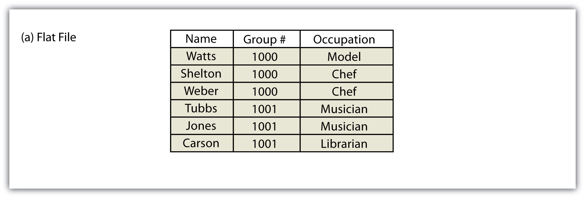
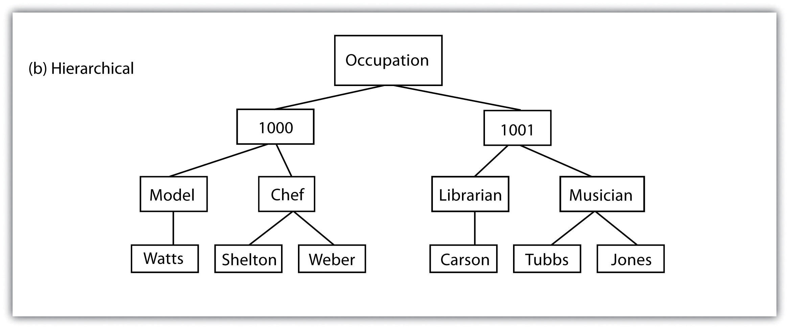
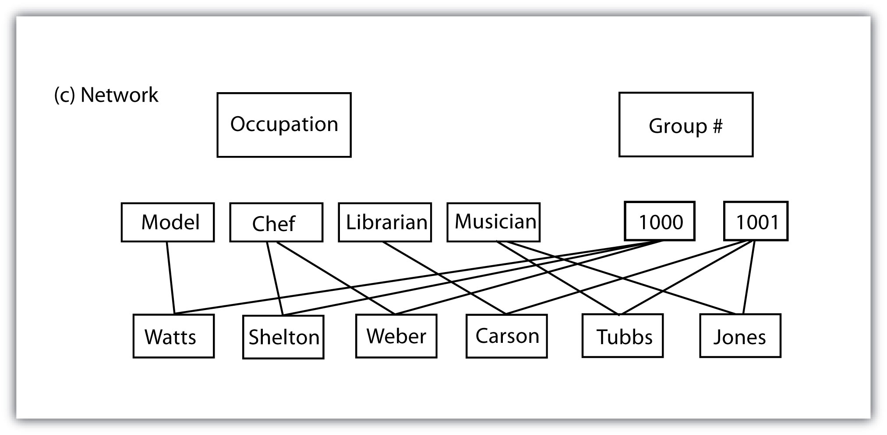
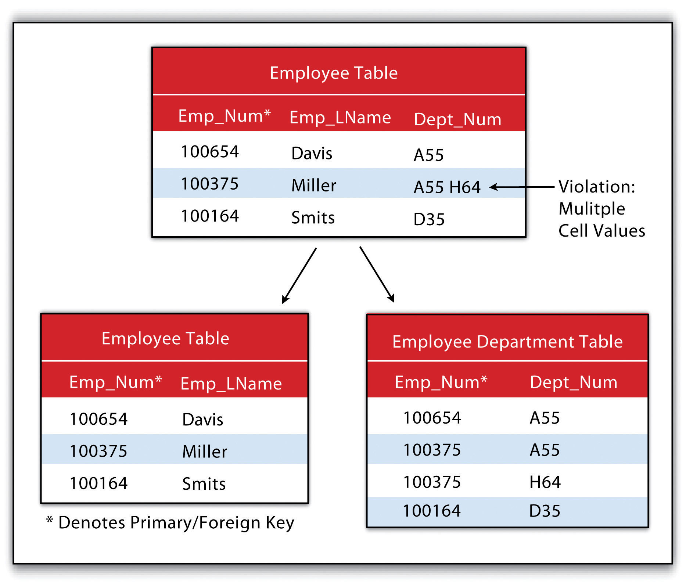
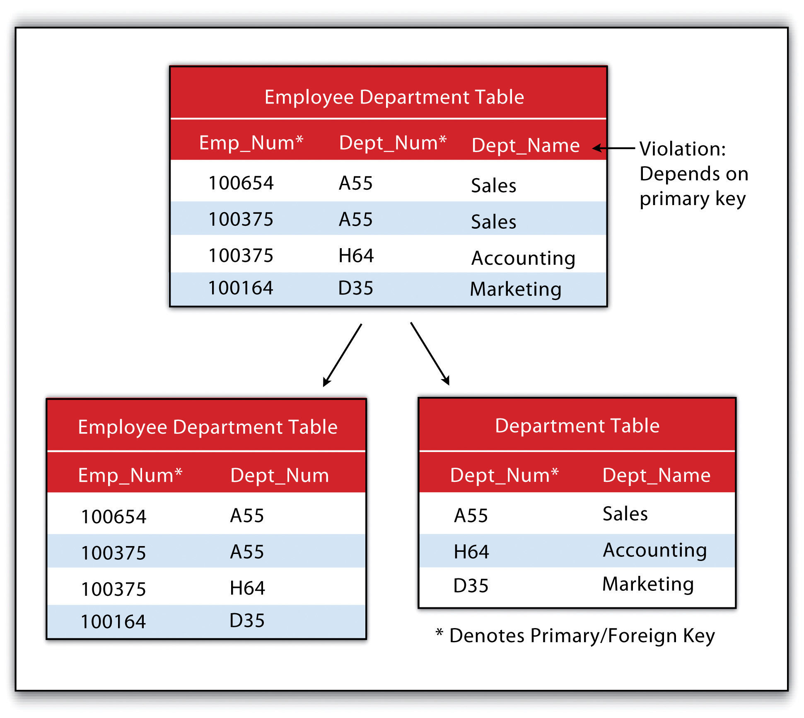
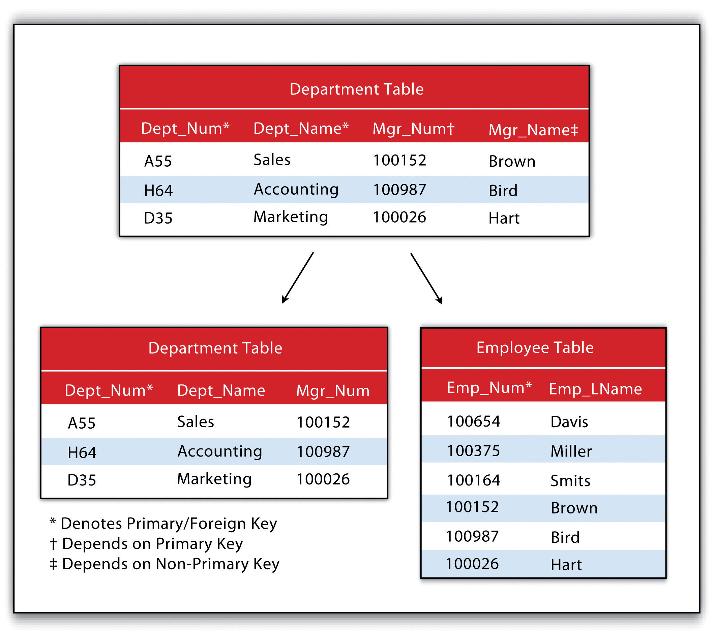

A databaseA structured collection of data files. is a structured collection of data files. A database management system (DBMS)A software package that allows for the creation, storage, maintenance, manipulation, and retrieval of large datasets distributed over one or more files. is a software package that allows for the creation, storage, maintenance, manipulation, and retrieval of large datasets that are distributed over one or more files. A DBMS and its associated functions are usually accessed through commercial software packages such as Microsoft Access, Oracle, FileMaker Pro, or Avanquest MyDataBase. Database management normally refers to the management of tabular data in row and column format and is frequently used for personal, business, government, and scientific endeavors. Geospatial database management systems, alternatively, include the functionality of a DBMS but also contain specific geographic information about each data point such as identity, location, shape, and orientation. Integrating this geographic information with the tabular attribute data of a classical DBMS provide users with powerful tools to visualize and answer the spatially explicit questions that arise in an increasingly technological society.
Several types of database models exist, such as the flat, hierarchical, network, and relational models (Worboys 1995; Jackson 1999).Worboys, M. F. 1995. GIS: A Computing Perspective. London: Taylor & Francis., Jackson, M. 1999. “Thirty Years (and More) of Databases.” Information and Software Technology 41: 969–78. A flat databaseA database model whereby all data are stored in a single table. is essentially a spreadsheet whereby all data are stored in a single, large table (Figure 5.4 "Flat Database"). A hierarchical databaseA simple database model that organizes data into a “one-to-many” association across levels. is also a fairly simple model that organizes data into a “one-to-many” association across levels (Figure 5.5 "Hierarchical Database"). Common examples of this model include phylogenetic trees for classification of plants and animals and familial genealogical trees showing parent-child relationships. Network databasesA simple database model that organizes data into a “one-to-many” or “many-to-many” association across levels. are similar to hierarchical databases, however, because they also support “many-to-many” relationships (Figure 5.6 "Network Database"). This expanded capability allows greater search flexibility within the dataset and reduces potential redundancy of information. Alternatively, both the hierarchical and network models can become incredibly complex depending on the size of the databases and the number of interactions between the data points. Modern geographic information system (GIS) software typically employs a fourth model referred to as a relational databaseA database model that relates information across multiple tables according to primary and foreign keys. (Codd 1970).Codd, E. 1970. “A Relational Model of Data for Large Shared Data Banks.” Communications of the Association for Computing Machinery 13 (6): 377–87.
Figure 5.4 Flat Database
Figure 5.5 Hierarchical Database
Figure 5.6 Network Database
A relational database management system (RDBMS)A software package that records information in such a way that data can be accessed without reorganization of the tables. is a collection of tables that are connected in such a way that that data can be accessed without reorganization of the tables. The tables are created such that each column represents a particular attribute (e.g., soil type, PIN number, last name, acreage) and each row contains a unique instance of data for that columnar attribute (e.g., Delhi Sands Soils, 5555, Smith, 412.3 acres)
In the relational model, each table (not surprisingly called a relation) is linked to each other table via predetermined keys (Date 1995).Date, C. 1995. An Introduction to Database Systems. Reading, MA: Addison-Wesley. The primary keyThe attribute whose value uniquely identifies a particular record in an attribute table. represents the attribute (column) whose value uniquely identifies a particular record (row) in the relation (table). The primary key may not contain missing values as multiple missing values would represent nonunique entities that violate the basic rule of the primary key. The primary key corresponds to an identical attribute in a secondary table (and possibly third, fourth, fifth, etc.) called a foreign keyThe attribute that corresponds to a primary key in an associated table.. This results in all the information in the first table being directly related to the information in the second table via the primary and foreign keys, hence the term “relational” DBMS. With these links in place, tables within the database can be kept very simple, resulting in minimal computation time and file complexity. This process can be repeated over many tables as long as each contains a foreign key that corresponds to another table’s primary key.
The relational model has two primary advantages over the other database models described earlier. First, each table can now be separately prepared, maintained, and edited. This is particularly useful when one considers the potentially huge size of many of today’s modern databases. Second, the tables may be maintained separately until the need for a particular query or analysis calls for the tables to be related. This creates a large degree of efficiency for processing of information within a given database.
It may become apparent to the reader that there is great potential for redundancy in this model as each table must contain an attribute that corresponds to an attribute in every other related table. Therefore, redundancy must actively be monitored and managed in a RDBMS. To accomplish this, a set of rules called normal forms have been developed (Codd 1970).Codd, E. 1970. “A Relational Model of Data for Large Shared Data Banks.” Communications of the Association for Computing Machinery 13 (6): 377–87. There are three basic normal forms. The first normal formThe first stage in the normalization of a relational database in which repeating groups and attributes are eliminated by placing them into a separate tables connected via primary keys and foreign keys. (Figure 5.7 "First Normal Form Violation (above) and Fix (below)") refers to five conditions that must be met (Date 1995).Date, C. 1995. An Introduction to Database Systems. Reading, MA: Addison-Wesley. They are as follows:
Figure 5.7 First Normal Form Violation (above) and Fix (below)
The second normal formThe second stage in the normalization of a relational database in which all nonkey attributes are made dependent on the primary key. states that any column that is not a primary key must be dependent on the primary key. This reduces redundancy by eliminating the potential for multiple primary keys throughout multiple tables. This step often involves the creation of new tables to maintain normalization.
Figure 5.8 Second Normal Form Violation (above) and Fix (below)
The third normal formThe third stage in the normalization of a relational database in which all nonprimary keys are made mutually exclusive. states that all nonprimary keys must depend on the primary key, while the primary key remains independent of all nonprimary keys. This form was wittily summed up by Kent (1983)Kent, W. 1983. “A Simple Guide to Five Formal Forms in Relational Database Theory.” Communications of the Association for Computing and Machinery. 26 (2): 120–25. who quipped that all nonprimary keys “must provide a fact about the key, the whole key, and nothing but the key.” Echoing this quote is the rejoinder: “so help me Codd” (personal communication with Foresman 1989).
Figure 5.9 Third Normal Form Violation (above) and Fix (below)
An additional advantage of an RDBMS is that it allows attribute data in separate tables to be linked in a post hoc fashion. The two operations commonly used to accomplish this are the join and relate. The joinAn operation that appends the information of one table into a second table through the use of an attribute or field that is common to both tables. operation appends the fields of one table into a second table through the use of an attribute or field that is common to both tables. This is commonly utilized to combine attribute information from one or more nonspatial data tables (i.e., information taken from reports or documents) with a spatially explicit GIS feature layer. A second type of join combines feature information based on spatial location and association rather than on common attributes. In ArcGIS, three types of spatial joins are available. Users may (1) match each feature to the closest feature, (2) match each feature to the feature that it is part of, or (3) match each feature to the feature that it intersects.
Alternatively, the relateAn operation that temporarily associates two attribute tables through the use of an attribute or field that is common to both tables while keeping the tables physically separate. operation temporarily associates two map layers or tables while keeping them physically separate. Relates are bidirectional, so data can be accessed from the one of the tables by selecting records in the other table. The relate operation also allows for the association of three or more tables, if necessary.
Sometimes it can be unclear as to which operation one should use. As a general rule, joins are most suitable for instances involving one-to-one or many-to-one relationships. Joins are also advantageous due to the fact that the data from the two tables are readily observable in the single output table. The use of relates, on the other hand, are suitable for all table relationships (one-to-one, one-to-many, many-to-one, and many-to-many); however, they can slow down computer access time if the tables are particularly large or spread out over remote locations.
| Instructor | Class | Class Number | Enrollment |
|---|---|---|---|
| Lennon | Advanced Calculus | 10073 | 34 |
| McCartney | Introductory Physical Education | 10045 | 23 |
| Harrison | Auto Repair and Feminism | 10045 | 54 |
| Starr, Best | Quantum Physics | 10023 | 39 |